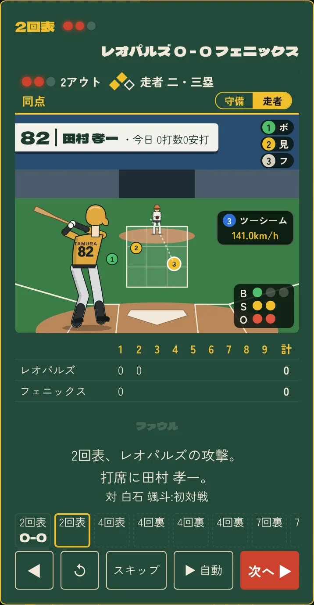
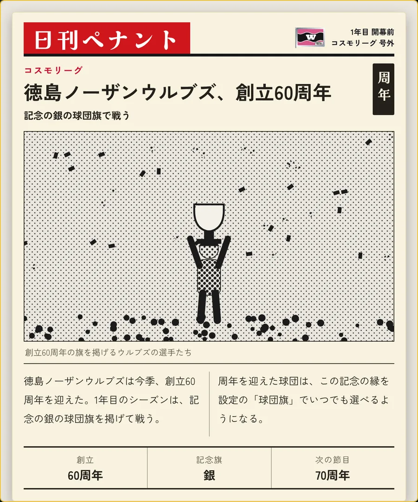
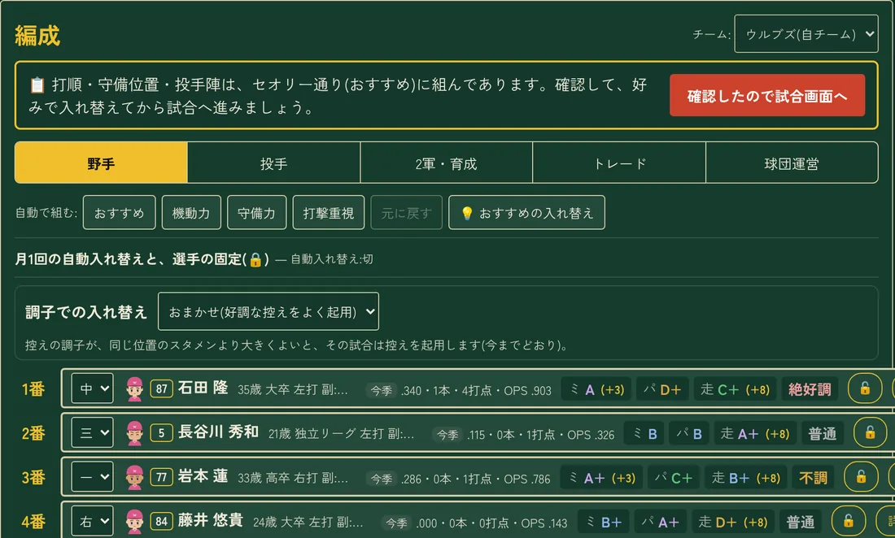
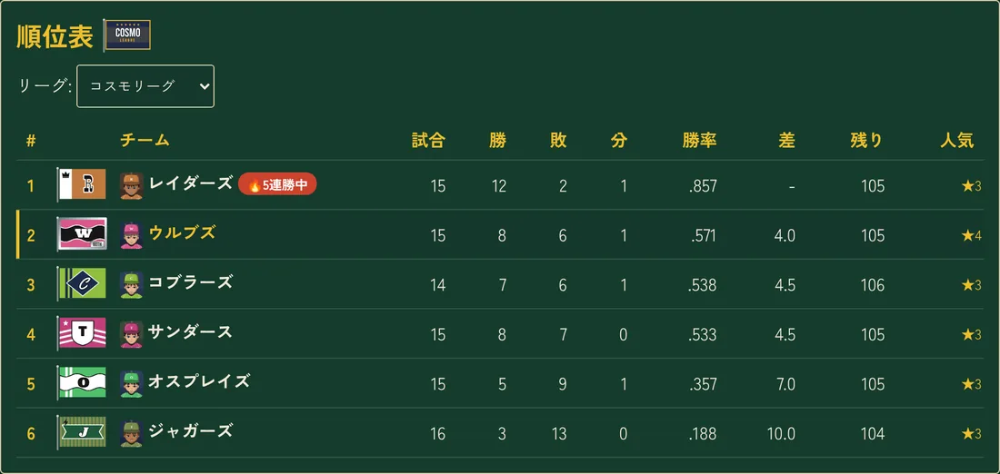

最新版 {{VERSION}} / {{DATE}}
架空のプロ野球リーグで、監督とGMを一人で。ドラフトで選手を選び、勝負どころは自分で采配する。ブラウザで開くだけで遊べます。
遊べること
一球ごとに、勝負を見る
ハイライト観戦では、気になる打席を捕手の後ろから一球ずつ見られます。球種と球速、ゾーンのどこを通ったかが分かります。打者と投手は、球団の色のユニフォームを着た人物で描かれます。
勝負どころでは、代打・継投・バント・盗塁・スクイズ・エンドランを自分で決められます。任せたいときは「おまかせ」で進みます。

できごとは、号外になる
優勝、記録、サヨナラ、引退、殿堂入り。大きなできごとは、新聞の号外として残ります。長い記事になるものもあります。
球団旗は、頭文字と形と柄で選べます。創立から10年ごとに、記念の旗が増えます。

ドラフトから、秋季キャンプまで
ドラフト、2軍での育成、夏のスカウト、秋季キャンプ。FAとトレード、年俸と契約更改(オン・オフを選べます)もあります。
選手には調子・スキル・性格があります。同じ打率でも、中身が違います。

何年でも続くリーグ
球団の数と2部制を選べます。順位、個人成績、歴代記録、永久欠番、殿堂入り。銀河杯と世界大会もあります。
試合の結果と成績は、すべて乱数によるシミュレーションです。

ほかにも
- かんたん・通常・エクストラハード・スペシャル
- お題つきのシナリオが5本
- 画面のスタイルは49種類。英語表示にも対応
- スマホでも遊べます(縦持ち)
- 選手の図鑑と実績
- 遊び込むと開く、隠し要素
はじめかた
「はじめる」を押して、モードを選びます。初めてなら「かんたん」がおすすめです。
リーグ設定は、そのままで大丈夫です。「残りは初期値のまま、リーグを作成する」で始まります。
試合の画面で「観戦」を押すと、ハイライト観戦です。結果だけ知りたいときは「次の試合まで進める」を押します。
お知らせ
- {{VERSION}}
本編を公開しました。編成の打順で、選手の欄の右端がそろうようにしました。
- v1.8.e
試合の結果・テーブルスコア・ハイライトで、スクイズ・エンドラン・セーフティバントが分かるようになりました。成績の画面に球団ごとの作戦の数も出ます。
- v1.8.d
ハイライトで、点が入った場面の見出しとスコアが同時に出るようになりました。サヨナラの場面も直しました。
- v1.8.c
打席の画面の打者と投手を、球団の色のユニフォームの人物にしました。背中には英字の名字が入ります。
- v1.8.b
似顔が劇画に変わった選手に、「貫禄が出てきた」の一言が出るようになりました。
- v1.8.a
記録に当たる数と、殿堂入りの安打の基準を測り直しました。
注意書き
- セーブについて
- セーブは、遊んでいるブラウザの中に保存されます。別の端末や別のアドレスで続きを遊ぶときは、設定の「ファイルに書き出す」で作ったバックアップを、読み込んでください。
- イラストについて
- 図鑑の選手の絵、打席の画面の絵、案内役の絵は、画像生成AIで作ったものです。ゲームの中では、はじめは表示されません。設定でオンにすると表示されます。
- 架空であることについて
- 登場する球団・選手・リーグ・記録は、すべて架空です。実在の球団・選手・団体とは関係ありません。
- 音声について
- コール音声:VOICEVOX:ずんだもん
- 使ってよい範囲
- 遊ぶことと、動作を確かめることは自由です。このサイトとゲームのファイルの写しや、作り直したものを配ることはできません。著作権は作者にあります。